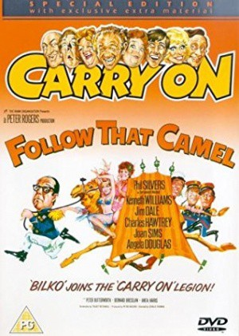
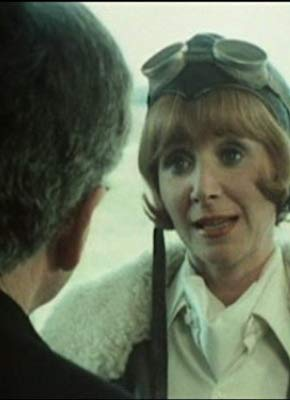
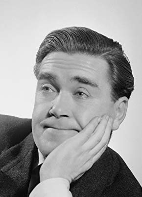
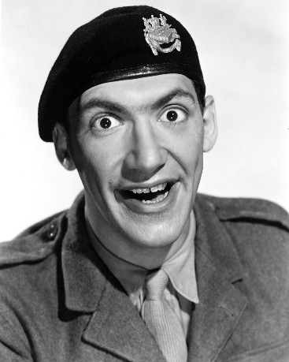
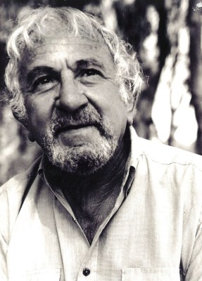
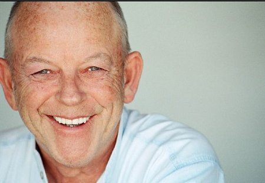
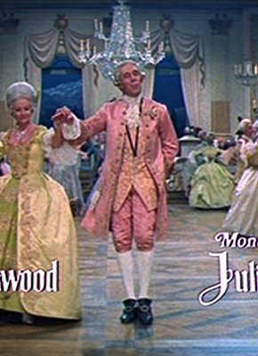
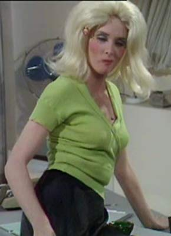

#11787 Carry On 14 - Ist ja irre - In der Wüste fließt kein Wasser
Alternativ: Carry On... Follow That Camel (Englischer Titel)
 
 IMDB-Wertung: 6.1 / 10
IMDB-Wertung: 6.1 / 10  Metascore: 0
Metascore: 0 
Welch Schmach - der englische Gentleman Bertram Oliphant "Bo" West soll beim Cricket unfair gespielt haben - und das vor den Augen seiner Angebeteten Lady Jane. Zu unrecht seiner Ehre beraubt, verlässt Bo mit seinem treuem Diener Simpson England, um in Arabien bei der Fremdenlegion anzuheuern. Doch die Legion erweist sich als recht unkomfortabel für den verwöhnten Bo. Sergeant Nocker macht den beiden Engländern das Leben zur Hölle. Jedoch nur anfangs, denn Bo und Simpson kennen ein Geheimnis Nocker's, das ihn vor dem Kommandanten Burger in Ungnade bringen würde. Fortan genießen die beiden den Aufenthalt bei der Legion, wäre da nicht der blutrünstige Scheich Abdul, der erst Ruhe gibt, wenn er sich der ungläubigen Fremden entledigt hat. Zu allem Pech gerät Lady Jane auch noch in die Fänge des Scheichs, als sie sich auf der Suche nach Bo nach Arabien begibt. Nun gilt es nicht nur das eigene Leben vor dem fanatischen Scheich zu retten ...
Jahr: 1967
Dauer: 88 Minuten
FSK:
Land: England Studio: Carol Media HomeTonspuren:
Untertitel:
Auflösung: SD (576x432) Größe: 699 MB
Genre: Komödie, Abenteuer, Liebe
Regisseur: Gerald Thomas
Drehbuch: Talbot Rothwell
Soundtrack: Eric Rogers
Darsteller:
- Phil Silvers als Sgt. Nocker
 Kenneth Williams als Commandant Maximilian Burger
Kenneth Williams als Commandant Maximilian Burger Jim Dale als Bertram Oliphant 'Bo' West
Jim Dale als Bertram Oliphant 'Bo' West Charles Hawtrey als Capt. Le Pice
Charles Hawtrey als Capt. Le Pice Joan Sims als Zig-Zig
Joan Sims als Zig-Zig-  Angela Douglas als Lady Jane Ponsonby
-  Peter Butterworth als Simpson
-  Bernard Bresslaw als Sheikh Abdul Abulbul
- Anita Harris als Corktip
-  John Bluthal als Cpl. Clotski
 Peter Gilmore als Capt. Humphrey Bagshaw
Peter Gilmore als Capt. Humphrey Bagshaw-  Julian Holloway als Ticket Collector
 Larry Taylor als Riff
Larry Taylor als Riff- William Hurndell als Raff
-  Julian Orchard als Doctor
-  Elizabeth Counsell als Harem Girl (uncredited)
 Harry Fielder als Legionnaire (uncredited)
Harry Fielder als Legionnaire (uncredited) Juba Kennerley als Dinner Guest (uncredited)
Juba Kennerley als Dinner Guest (uncredited) Gertan Klauber als Algerian Spiv (uncredited)
Gertan Klauber als Algerian Spiv (uncredited)- Ricardo Montez als Riff at Abdul's Tent (uncredited)
- Edmund Pegge als Bowler (uncredited)
- William Mervyn als Sir Cyril Ponsonby
- David Glover als Hotel Manager
- Vincent Ball als Ship's Officer
- Peter Jesson als Lawrence (scenes deleted)
- Simon Cain als Riff at Abdul's Tent (uncredited)
- Jimmy Charters als Cricket Umpire (uncredited)
- Dominique Don als Harem Girl (uncredited)
- Sally Douglas als Harem Girl (uncredited)
- Gina Gianelli als Harem Girl (uncredited)
- Angela Grant als Harem Girl (uncredited)
- Frank Henson als Legionnaire (uncredited)
- Helga Jones als Harem Girl (uncredited)
- Harold Kasket als Hotel Gentleman (uncredited)
- Margot Maxine als Harem Girl (uncredited)
- Michael Nightingale als Nightingale the Butler (uncredited)
- Zorenah Osborne als Harem Girl (uncredited)
- Jo Rowbottom als Harem Girl (uncredited)
- Anne Scott als Harem Girl (uncredited)
- Jack Sharp als Man at Cricket Match (uncredited)
- Frank Singuineau als Riff at Abdul's Tent (uncredited)
- Carol Sloan als Harem Girl (uncredited)
- Patsy Snell als Harem Girl (uncredited)
- Gina Warwick als Harem Girl (uncredited)
- Karen Young als Harem Girl (uncredited)
Datei: X:\7+mehr(A-Z)\Carry On\Carry On 14 - Ist ja irre - In der Wüste fließt kein Wasser (1967, FSK, 576x432).avi seit 20.09.2019
Festplatte: HD Collection-7+mehr(A-Z)+Person
 Es gibt insgesamt 33 Filme in der Gruppe '7+mehr(A-Z)\Carry On'
Es gibt insgesamt 33 Filme in der Gruppe '7+mehr(A-Z)\Carry On'